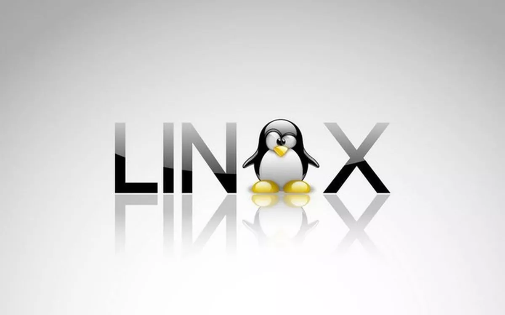

Windows
postado em 28 de junho de 2022
O sistema operacional terá várias novidades, incluindo um visual mais moderno, mais segurança e velocidade, bem como um novo método de organização de janelas. Além disso, pela primeira vez na história, aplicativos Android estarão presentes na Microsoft Store, o que marcará o início de uma nova era de integração entre ecossistemas de apps.
WindowsLinux
postado em 29 de junho de 2022 A história do Linux começa no ano de 1991, pelas mãos de um estudante universitário finlandês chamado Linus Torvalds. O Linux foi criado por ele, não totalmente do "zero", mas sim como uma variação do Minix. O Minix é um sistema operacional simples, criado por Andrew S.
Linux